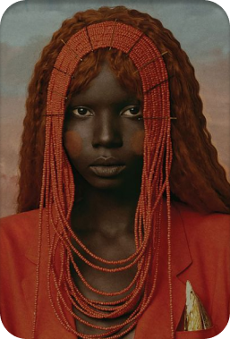
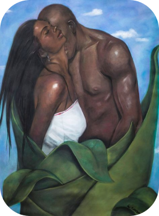
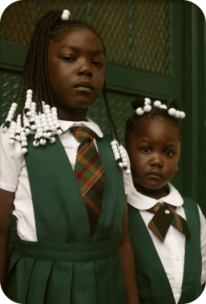
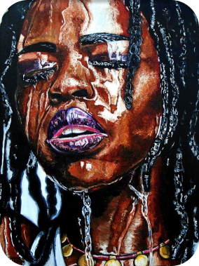
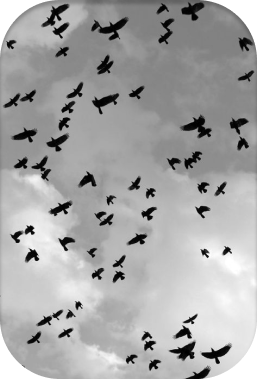

M-kenya
Creatives Kenya
Art refers to a diverse range of human activities in creating visual, auditory or performing artifacts. These artworks express the author's imaginative or technical skill. Art is intended to be appreciated for its beauty or emotional power. In their most general form these activities include the production of works of art, the criticism of art, the study of the history of art, and the aesthetic dissemination of art.
Features
4k 120fps
This is a portrait by Nkwantsu Szule. In modern usage after the 17th century, where aesthetic considerations are paramount, the fine arts are separated and distinguished from acquired skills in general, such as the decorative or applied arts.
4k 120fps
Growing passion by Francis Nyamwala. The special feature of this catalog is the quality of the photography and reproduction. This beautiful picture portrays love and warmth.
4k 120fps
Hairstyles portrait by Stephan Kariuki, gives many hours of pleasure to those interested in African Art. The quality of the picture is excellent. It depicts young African womanhood at it's earliest stage.
4k 120fps
Lauryn Hill. How would you describe African art? African Art has many characteristics, some of which include creative expressionism over realism, the prevalence of images and sculpture of the human figure, larger focus on sculpture rather than painting, but all of that doesn't matter if it's not pleasing to the eye.
4k 120fps
Adam Jahiel's abstract art is a masterpiece. It converses volumes of emotion and archetypes. The artist's life is but a reflection of his work. This masterpiece took 3 days to complete and was painted using Rothko which is a major proponent of the Abstract Expressionism.